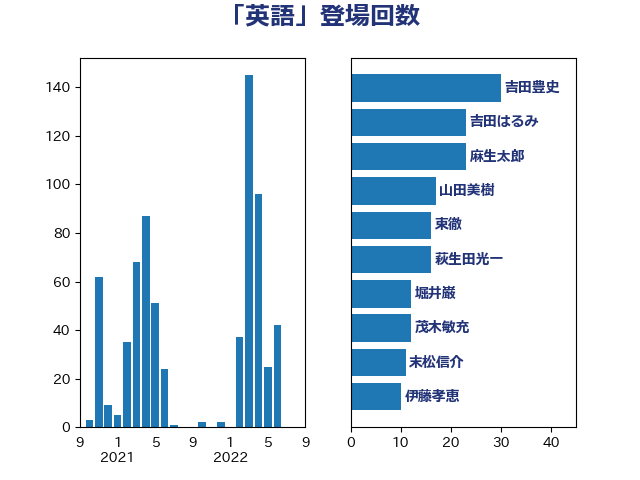

単語「英語」

| 吉田豊史 | 日本維新の会 | 30 回 |
| 吉田はるみ | 立憲民主党 | 23 回 |
| 麻生太郎 | 自由民主党 | 23 回 |
| 山田美樹 | 自由民主党 | 17 回 |
| 東徹 | 日本維新の会 | 16 回 |
| 萩生田光一 | 自由民主党 | 16 回 |
| 堀井巌 | 自由民主党 | 12 回 |
| 茂木敏充 | 自由民主党 | 12 回 |
| 末松信介 | 自由民主党 | 11 回 |
| 伊藤孝恵 | 国民民主党 | 10 回 |
| 石井苗子 | 日本維新の会 | 10 回 |
| 西銘恒三郎 | 自由民主党 | 10 回 |
| 荒井優 | 立憲民主党 | 9 回 |
| 石川大我 | 立憲民主党 | 8 回 |
| 谷田川元 | 立憲民主党 | 8 回 |
| 吉川元 | 立憲民主党 | 7 回 |
| 小熊慎司 | 立憲民主党 | 7 回 |
| 浅田均 | 日本維新の会 | 7 回 |
| 緒方林太郎 | 無所属 | 6 回 |
| 吉良州司 | 無所属 | 5 回 |
| 宮崎政久 | 自由民主党 | 5 回 |
| 猪口邦子 | 自由民主党 | 5 回 |
| 羽田次郎 | 立憲民主党 | 5 回 |
| 藤巻健太 | 日本維新の会 | 5 回 |
| 音喜多駿 | 日本維新の会 | 5 回 |
| 小野田紀美 | 自由民主党 | 4 回 |
| 杉本和巳 | 日本維新の会 | 4 回 |
| 玉木雄一郎 | 国民民主党 | 4 回 |
| 菅義偉 | 自由民主党 | 4 回 |
| 西村康稔 | 自由民主党 | 4 回 |
| 足立康史 | 日本維新の会 | 4 回 |
| 中川正春 | 立憲民主党 | 3 回 |
| 和田義明 | 自由民主党 | 3 回 |
| 嘉田由紀子 | 無所属 | 3 回 |
| 城内実 | 自由民主党 | 3 回 |
| 小泉進次郎 | 自由民主党 | 3 回 |
| 岸田文雄 | 自由民主党 | 3 回 |
| 林芳正 | 自由民主党 | 3 回 |
| 渡辺周 | 立憲民主党 | 3 回 |
| 片山さつき | 自由民主党 | 3 回 |
| 空本誠喜 | 日本維新の会 | 3 回 |
| 鈴木庸介 | 立憲民主党 | 3 回 |
| 須藤元気 | 無所属 | 3 回 |
| 上野通子 | 自由民主党 | 2 回 |
| 丸川珠代 | 自由民主党 | 2 回 |
| 井上貴博 | 自由民主党 | 2 回 |
| 伊藤忠彦 | 自由民主党 | 2 回 |
| 古屋範子 | 公明党 | 2 回 |
| 大串博志 | 立憲民主党 | 2 回 |
| 山井和則 | 立憲民主党 | 2 回 |
| 山添拓 | 日本共産党 | 2 回 |
| 山田宏 | 自由民主党 | 2 回 |
| 川田龍平 | 立憲民主党 | 2 回 |
| 杉田水脈 | 自由民主党 | 2 回 |
| 松島みどり | 自由民主党 | 2 回 |
| 松沢成文 | 日本維新の会 | 2 回 |
| 浜田聡 | NHK党 | 2 回 |
| 田島麻衣子 | 立憲民主党 | 2 回 |
| 田嶋要 | 立憲民主党 | 2 回 |
| 田村智子 | 日本共産党 | 2 回 |
| 石原正敬 | 自由民主党 | 2 回 |
| 紙智子 | 日本共産党 | 2 回 |
| 自見はなこ | 自由民主党 | 2 回 |
| 西岡秀子 | 国民民主党 | 2 回 |
| 西村智奈美 | 立憲民主党 | 2 回 |
| 鈴木義弘 | 国民民主党 | 2 回 |
| 青山大人 | 立憲民主党 | 2 回 |
| 青山繁晴 | 自由民主党 | 2 回 |
| 高橋光男 | 公明党 | 2 回 |
| 黄川田仁志 | 自由民主党 | 2 回 |
| 三木圭恵 | 日本維新の会 | 1 回 |
| 下条みつ | 立憲民主党 | 1 回 |
| 中曽根康隆 | 自由民主党 | 1 回 |
| 中谷一馬 | 立憲民主党 | 1 回 |
| 串田誠一 | 日本維新の会 | 1 回 |
| 井上信治 | 自由民主党 | 1 回 |
| 井上哲士 | 日本共産党 | 1 回 |
| 仁木博文 | 無所属 | 1 回 |
| 伊藤孝江 | 公明党 | 1 回 |
| 伊藤岳 | 日本共産党 | 1 回 |
| 佐藤正久 | 自由民主党 | 1 回 |
| 勝部賢志 | 立憲民主党 | 1 回 |
| 古川禎久 | 自由民主党 | 1 回 |
| 吉田統彦 | 立憲民主党 | 1 回 |
| 吉良よし子 | 日本共産党 | 1 回 |
| 塩崎彰久 | 自由民主党 | 1 回 |
| 大串正樹 | 自由民主党 | 1 回 |
| 寺田静 | 無所属 | 1 回 |
| 小倉將信 | 自由民主党 | 1 回 |
| 小林鷹之 | 自由民主党 | 1 回 |
| 小沢雅仁 | 立憲民主党 | 1 回 |
| 小西洋之 | 立憲民主党 | 1 回 |
| 山口那津男 | 公明党 | 1 回 |
| 山田賢司 | 自由民主党 | 1 回 |
| 岡本三成 | 公明党 | 1 回 |
| 川合孝典 | 国民民主党 | 1 回 |
| 平井卓也 | 自由民主党 | 1 回 |
| 打越さく良 | 立憲民主党 | 1 回 |
| 有村治子 | 自由民主党 | 1 回 |
| 杉尾秀哉 | 立憲民主党 | 1 回 |
| 枝野幸男 | 立憲民主党 | 1 回 |
| 梅村みずほ | 日本維新の会 | 1 回 |
| 梅谷守 | 立憲民主党 | 1 回 |
| 榛葉賀津也 | 国民民主党 | 1 回 |
| 橘慶一郎 | 自由民主党 | 1 回 |
| 武井俊輔 | 自由民主党 | 1 回 |
| 河野太郎 | 自由民主党 | 1 回 |
| 浅野哲 | 国民民主党 | 1 回 |
| 熊谷裕人 | 立憲民主党 | 1 回 |
| 片山大介 | 日本維新の会 | 1 回 |
| 福島みずほ | 社会民主党 | 1 回 |
| 穀田恵二 | 日本共産党 | 1 回 |
| 竹谷とし子 | 公明党 | 1 回 |
| 笠井亮 | 日本共産党 | 1 回 |
| 篠原孝 | 立憲民主党 | 1 回 |
| 緑川貴士 | 立憲民主党 | 1 回 |
| 舩後靖彦 | れいわ新選組 | 1 回 |
| 若松謙維 | 公明党 | 1 回 |
| 藤井比早之 | 自由民主党 | 1 回 |
| 赤羽一嘉 | 公明党 | 1 回 |
| 重徳和彦 | 立憲民主党 | 1 回 |
| 金子恵美 | 立憲民主党 | 1 回 |
| 鈴木俊一 | 自由民主党 | 1 回 |
| 鈴木敦 | 国民民主党 | 1 回 |
| 階猛 | 立憲民主党 | 1 回 |
| 青柳仁士 | 日本維新の会 | 1 回 |
| 鰐淵洋子 | 公明党 | 1 回 |